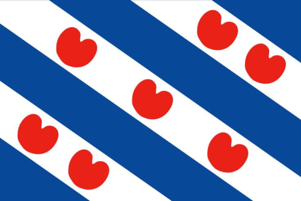

Agoeie!
Wolkom beste minsken op dizze fryske website!

Frys
lan Bop
pe!
Foar it heitelan.
Fryske folksliet:
Klik
hier
om de wikipedia pagina te bekijken van Friesland.
spul:
Oer Us
Fryske shirts op Roblox
groningen is fictief.